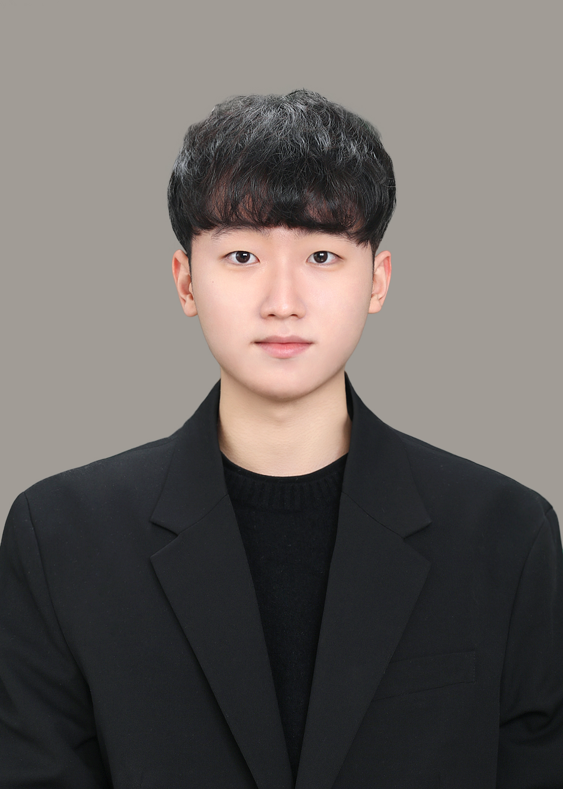

변지환의 포트폴리오

이름 :
변지환
소속 :
성균관대학교 소포트웨어학과 2학년
Contact information :
optimize21@g.skku.edu
Github :
깃허브 프로필 페이지
관심사 :
인공지능 추론 가속
아래는 학부 졸업까지 진행 상황입니다. (2학년)
교내활동 정리
성균SW멘토링(매향여자정보고등학교)
학생회 (제 6대 학생회SW:EAR)
기간: 2021.06 ~ 2021.12
내용: 파이썬 트랙 세미나 진행 (온오프 혼합)
기간: 2022.03 ~ 현재
내용:
- 소프트웨어융합대학 제6대 학생회 지원국 부원
- SKKURRR WAE EARAE 코드윗미 이벤트 기획 및 수행
- 소통창구(SNS, 에브리타임, 카카오 관리자 채널 등) 관리 및 대응
My SNS Links
Instagram
Facebook
Notion